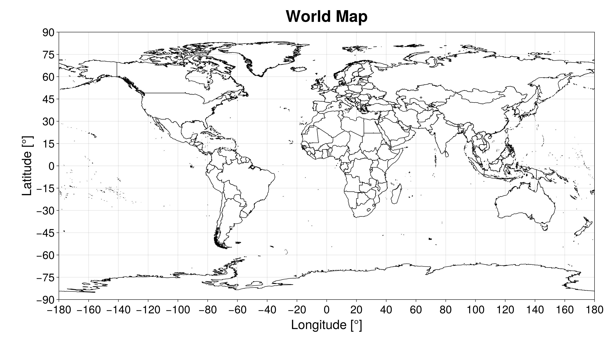

World Map
SatelliteAnalysis.jl has a built-in algorithm to plot the World Map provided that the user loaded GeoMakie.jl and one of the Makie.jl's back end. This empty plot can be used to add analysis on top of it. We can create it using the function:
plot_world_map(; kwargs...) -> Figure, AxisIt returns a Makie.jl Figure and Axis with the World map. All kwargs... are passed to the function Figure.
This function plots the countries' borders in the created figure using the file with the country polygons fetched with the function fetch_country_polygons. Hence, if this files does not exist, the algorithm tries to download it.
julia> using GeoMakie, CairoMakiejulia> fig, ax = plot_world_map()(Scene (1450px, 800px): 0 Plots 1 Child Scene: └ Scene (1450px, 800px), Axis (1 plots))julia> figFigure()
